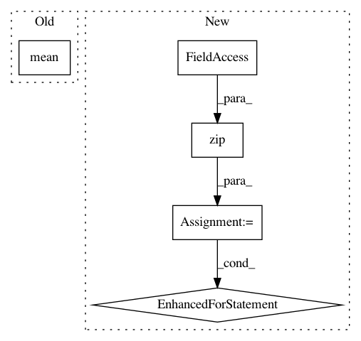

c6def7dfd9ce9c2f02a5ad1ded8c9feec449b001,imagenet/transforms.py,Normalize,__call__,#Normalize#Any#,29
Before Change
class Normalize(object):
def __call__(self, tensor):
std = tensor.std()
tensor.sub_(tensor.mean())
tensor.div_(std)
return tensor
After Change
self.std = std
def __call__(self, tensor):
for t, m, s in zip(tensor, self.mean, self.std):
t.sub_(m).div_(s)
return tensor
class Scale(object):
In pattern: SUPERPATTERN
Frequency: 3
Non-data size: 5
Instances
Project Name: OpenNMT/OpenNMT-py
Commit Name: c6def7dfd9ce9c2f02a5ad1ded8c9feec449b001
Time: 2016-10-03
Author: soumith@fb.com
File Name: imagenet/transforms.py
Class Name: Normalize
Method Name: __call__
Project Name: Scitator/catalyst
Commit Name: c6ea0fc2354e54e3ae76fee78702c8ee228ecad7
Time: 2019-10-29
Author: 34604336+jchen42703@users.noreply.github.com
File Name: catalyst/dl/callbacks/metrics/auc.py
Class Name: AUCCallback
Method Name: on_loader_end